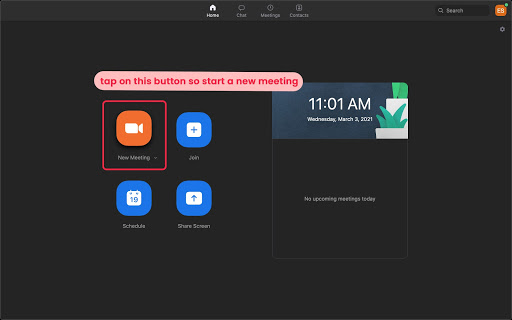
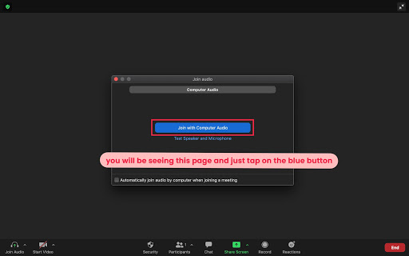
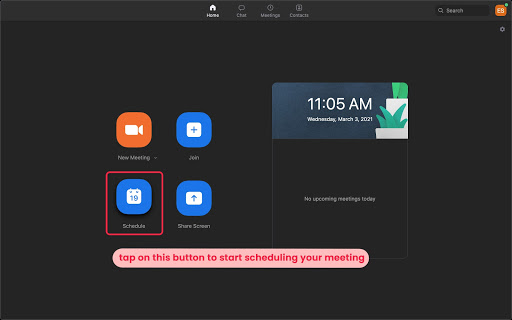
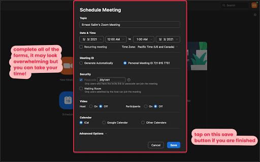
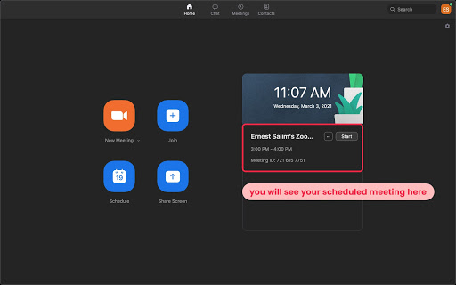

Learn through our comprehensive and quick video explanation!
Written and Photo Manuals
earn by reading through our detail-oriented and carefully
curated written and photo manuals.
How to host a meeting:
1. Open the Zoom application. A window will pop
up. (Make sure to be signed in)
2. Click on the Orange Icon above New
Meeting.

3. A new window will pop up. This is your own personal meeting
room. An Audio Conference Option Window will also pop up. Click on the Join with Computer
Audio button.

4. You have successfully hosted a meeting.
5.(Optional) If an error message appears,
please follow the
instructions provided by Zoom to test the clarity of your audio. Click on the Test Speaker and
Microphone button. Keep an eye on the little box at the bottom left corner of the window.
Keep repeating
until Zoom allows you to enter the room.
6.(Optional) If the Audio Conference Option
window does not appear, open your personal meeting room window. Navigate to the bottom left & click on
the Join Audio button. Follow step 3 to proceed.
How to schedule a meeting:
1. Open the Zoom application. A window will pop
up. (Make sure to be signed in)
2. Click on the Blue Calendar Icon above
Schedule.

3. A Schedule Meeting window will pop up. Enter
any words in the
Topic Text Box. This cannot be left blank.

4. Select the Date, Time &
Duration for the
meeting.
(Reminder: A Zoom Basic plan has a 40-minute time limit on meetings with 3 or more
participants.)
5. Tick the Recurring Meeting checkbox to
schedule a repeated
meeting.
6. Under the Meeting ID section, select
Personal Meeting ID. The
numbers following it is your Zoom meeting ID. Alternatively, select Generate
Automatically to create a
room with a random meeting ID.
7. Under the Waiting Room section, select
Passcode to put a
password on your meeting. Select the Waiting Room to put participants in a waiting
room before allowed
in the meeting.
8. Under the Video section, you can allow or
disable both Host
and Participants camera upon entering the meeting.
9. Under the Audio section, you can choose how
Participants
connect to the meeting’s audio.
10. Under the Calendar section, you can pick
where the meeting
dates are saved. The choices are iCal(Apple), Outlook(Windows),
Google Calendar, and
Other Calendars.
The options available might differ from account to account.
11. Click the arrow head to access Advanced
Options. Select the
available options based on personal needs. This is not a mandatory step.
12. Click the Save button to schedule the
meeting.
13. The scheduled meeting will appear under the Calendar on the
Zoom Application main page. Click Start to directly start the meeting. Tap on the •••
button to access
more options which includes Copy Invitation, Edit &
Delete.

14. To view all scheduled meetings, navigate to the top of the
window. Click on Meetings(with a Clock Icon). All scheduled meetings will be displayed
there.